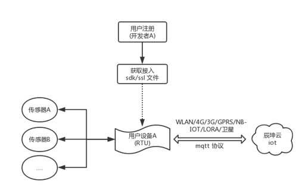

一、流程

二、步骤
1. 成为开发者
只要是平台的合法用户，都可以是开发者，所以只需按照正常的用户注册流程完成用户的注册即可。
2. 选择合适的sdk进行开发
注册完成后，在平台的“我的账号”中能看到相关的sdk及ssl文件。
目前平台提供了两种sdk供开发者选择，如下
|
名称 |
开发语言 |
特性 |
资源限制 |
|
嵌入式平台接入sdk |
C |
1、 支持数值/文本/图像的传输； 2、 秒级时间精度； |
1、ram> |
|
Linux平台接入sdk |
C |
1、 支持数值/文本/图像/视频（RTMP流）的传输； 2、 毫秒级时间精度； 3、 支持数据压缩； 4、 支持ssl v3\tls v1.2\tls v1.1\tls v1 传输加密 |
1、ram> |
用户可以视自己的设备情况选择合适的sdk版本进行开发。
3. sdk接口说明
各方法描述如下
|
api 名称 |
描述 |
|||
|
检查请求合法性 |
地址 |
|
method |
GET |
|
参数 |
|
|||
|
返回值 |
|
|||
|
说明 |
|
|||
|
获取设备信息 |
地址 |
|
method |
GET |
|
参数 |
示例：
|
|||
|
返回值 |
示例：
|
|||
|
说明 |
|
|||
4. 接入测试
完成开发后，设备接入网络，初次连入云平台的设备会在平台上进行注册，包括rtu/传感器(元数据)等信息都会自动写入平台，同时还会生成一条消息告知用户，如下所示：
收到此条消息后，就标识该设备已经正确的接入。在“设备管理”中，能看到该设备的详细信息
5. 数据交互
设备注册完后，即可进行数据的发送了。但在查看数据之前，需要先对设备元数据进行映射的设置，否则虽然能接收数据，但无法在平台中进行数据的查看。
设置见“设备管理”
修改完元数据的“系统元数据映射”后，点击保存即可。然后在“数据检索”中即可对设备的监测数据进行查看。
三、开发示例
demo A
按照此流程，对该 demo 的开发过程进行介绍，贴代码